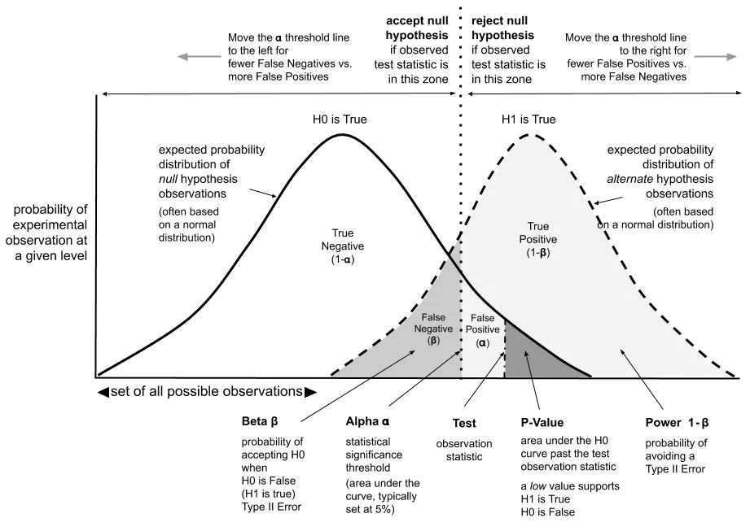
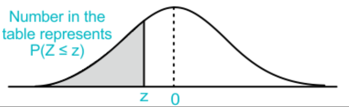

p-value (probability value) in Machine Learning#
Machine learning leverages statistical models to uncover patterns, make predictions, and guide decisions in large datasets. To assess the performance and reliability of these models, statistical tests are essential. The p-value observe the test resultsby assuming that the null hypothesis (H0) is true. The null hypothesis (H0) is defined as the hypothesis with no statistical significance between two variables
The p-value, ranging from 0 to 1, represents the level of significance in statistical tests. A smaller p-value indicates stronger evidence to reject the null hypothesis (H0). If the p-value is very small, it suggests that the observed result is plausible but does not conform to the null hypothesis. A p-value of 0.05 is commonly used as the significance level (α). When p-value > 0.05, the null hypothesis is accepted; when p-value < 0.05, it is rejected, indicating statistical significance.

The p-value plays a crucial role in various aspects of machine learning, including model selection, variable selection, hypothesis testing, and overfitting control. It helps in comparing model performances, identifying significant variables, validating hypotheses, and ensuring that models generalize well to new data. By providing a measure of statistical significance, the p-value aids in making informed decisions throughout the machine learning process.
P-values are fundamental in hypothesis testing, yet they are susceptible to two types of errors: Type I and Type II. A Type I error occurs when the Null hypothesis is incorrectly rejected, with a maximum probability defined by alpha, independent of sample size. A Type II error arises from the incorrect acceptance of the Null hypothesis, with its probability (beta) influenced by both the sample size and alpha. Beta decreases as sample size or the number of tests increases. Understanding these errors is crucial for accurate decision-making in statistical analysis.
Decision |
Accept H0 |
Reject H0 |
|---|---|---|
Truth |
||
H0 is true |
Correct decision |
Type I error |
H0 is false |
Type II error |
Correct decision |
To find the p-value corresponding to a given z-value or z-score, you can follow these steps:
Calculate the z-value:#
The z-value is calculated using the formula:
or z-score is defined as,
where \( \mu , \sigma \) are mean and variance of samples (n-samples)
\( p_0 \) assumed population proportion in the null hypothesis
Use the z-value to find the p-value:#
Once you have calculated the z-value, the next step is to determine the p-value, which is the probability that the observed statistic is as extreme as, or more extreme than, the observed value under the null hypothesis.
If the z-value is positive: The p-value is the area to the right of the z-value under the standard normal curve.
If the z-value is negative: The p-value is the area to the left of the z-value under the standard normal curve.
To find this area, you can use a z-table, which gives the cumulative probability up to a given z-value. If you want the one-tailed p-value, look directly at the value from the table. For a two-tailed p-value, multiply the table value by 2.
Interpret the p-value:#
Small p-value (typically ≤ 0.05): This indicates strong evidence against the null hypothesis, so you reject the null hypothesis.
Large p-value (> 0.05): This indicates weak evidence against the null hypothesis, so you fail to reject the null hypothesis.
Example:#
If you calculate a z-value of 1.96 and look up this value in the z-table, you might find that the corresponding cumulative probability is 0.9750. For a one-tailed test, the p-value would be \(1 - 0.9750 = 0.025\). For a two-tailed test, the p-value would be \(2 \times 0.025 = 0.05\).
This process shows how to calculate the p-value using the z-value and a z-table, allowing you to determine the statistical significance of your result.

import scipy.stats as stats
# Sample data
group1 = [4, 5, 6, 7, 8]
group2 = [2, 3, 4, 5, 6]
# Independent two-sample t-test
statistics, p_value= stats.ttest_ind(group1, group2)
# Print the results
print("Test Statistic:", statistics)
print("P Value:", p_value)
Test Statistic: 2.0
P Value: 0.08051623795726257
Example:
P-Value: Mathematical Explanation with Examples#
What is the P-Value?#
The p-value is a probability measure used in statistical hypothesis testing to assess the evidence against the null hypothesis. It represents the probability of obtaining test results at least as extreme as the observed data, under the assumption that the null hypothesis is true.
Mathematical Definition#
Given a test statistic ( T ) and its observed value ( t_{\text{obs}} ), the p-value is calculated as:
For a one-tailed test: [ \text{p-value} = P(T \geq t_{\text{obs}} \mid H_0 \text{ is true}) ] or [ \text{p-value} = P(T \leq t_{\text{obs}} \mid H_0 \text{ is true}) ] depending on the direction of the test.
For a two-tailed test: [ \text{p-value} = 2 \times P(T \geq |t_{\text{obs}}| \mid H_0 \text{ is true}) ]
Here, ( H_0 ) is the null hypothesis, and ( T ) follows a specific distribution under ( H_0 ) (e.g., normal, t-distribution).
Example 1: One-Sample Z-Test#
Scenario: Suppose we want to test if the mean of a population is equal to a specified value ( \mu_0 = 50 ). We have a sample with a mean ( \bar{x} = 52 ), a known population standard deviation ( \sigma = 10 ), and a sample size ( n = 30 ).
Step 1: Formulate Hypotheses
Null Hypothesis ( H_0 ): ( \mu = 50 )
Alternative Hypothesis ( H_1 ): ( \mu \neq 50 )
Step 2: Calculate the Test Statistic (Z-value) [ Z = \frac{\bar{x} - \mu_0}{\frac{\sigma}{\sqrt{n}}} = \frac{52 - 50}{\frac{10}{\sqrt{30}}} = \frac{2}{1.8257} \approx 1.095 ]
Step 3: Find the P-Value Using the standard normal distribution table (Z-table):
For ( Z = 1.095 ), the area to the right is ( P(Z \geq 1.095) = 0.1368 ).
Since this is a two-tailed test, the p-value is ( 2 \times 0.1368 = 0.2736 ).
Conclusion: Since the p-value (0.2736) is greater than the common significance level (e.g., 0.05), we fail to reject the null hypothesis. There is not enough evidence to suggest that the population mean differs from 50.
Example 2: One-Sample T-Test#
Scenario: A sample of 20 students has an average test score of 78, with a sample standard deviation of 10. We want to test whether the average score is different from 75 at a significance level of 0.05.
Step 1: Formulate Hypotheses
Null Hypothesis ( H_0 ): ( \mu = 75 )
Alternative Hypothesis ( H_1 ): ( \mu \neq 75 )
Step 2: Calculate the Test Statistic (T-value) [ T = \frac{\bar{x} - \mu_0}{\frac{s}{\sqrt{n}}} = \frac{78 - 75}{\frac{10}{\sqrt{20}}} = \frac{3}{2.236} \approx 1.342 ]
Step 3: Find the P-Value Using the t-distribution table with ( df = 19 ):
For ( T = 1.342 ), the area to the right is approximately ( P(T \geq 1.342) \approx 0.095 ).
Since this is a two-tailed test, the p-value is ( 2 \times 0.095 = 0.19 ).
Conclusion: The p-value (0.19) is greater than 0.05, so we fail to reject the null hypothesis. The data does not provide strong evidence that the average score differs from 75.
Example 3: Chi-Square Test#
Scenario: A company wants to test whether the distribution of colors in a batch of candies matches an expected distribution (e.g., 30% red, 20% blue, 50% green). They sample 100 candies and find 25 red, 20 blue, and 55 green.
Step 1: Formulate Hypotheses
Null Hypothesis ( H_0 ): The observed frequencies match the expected distribution.
Alternative Hypothesis ( H_1 ): The observed frequencies do not match the expected distribution.
Step 2: Calculate the Chi-Square Statistic [ \chi^2 = \sum \frac{(O_i - E_i)^2}{E_i} ] Where ( O_i ) are observed frequencies, and ( E_i ) are expected frequencies.
[ E_{\text{red}} = 30, \quad E_{\text{blue}} = 20, \quad E_{\text{green}} = 50 ] [ \chi^2 = \frac{(25-30)^2}{30} + \frac{(20-20)^2}{20} + \frac{(55-50)^2}{50} = \frac{25}{30} + 0 + \frac{25}{50} \approx 0.833 ]
Step 3: Find the P-Value Using the chi-square distribution table with ( df = 2 ):
For ( \chi^2 = 0.833 ), the p-value is approximately 0.66.
Conclusion: The p-value (0.66) is greater than 0.05, so we fail to reject the null hypothesis. The observed distribution does not significantly differ from the expected distribution.
Key Takeaways:#
A smaller p-value indicates stronger evidence against the null hypothesis.
Common thresholds for significance levels are 0.05, 0.01, or 0.001.
The p-value alone does not confirm or refute the null hypothesis but helps make an informed decision based on the evidence.
Example 2: To clarify the concepts of rejecting or accepting hypotheses using the p-value, let’s break it down step by step:
Steps to Understand the P-Value and Hypothesis Testing#
Calculate the Test Statistic:
You already know how to calculate the z-score (or test statistic) for your data. This is given by: [ Z = \frac{t_{\text{obs}} - \mu}{\sigma / \sqrt{n}} ] where:
( t_{\text{obs}} ) is the observed test statistic.
( \mu ) is the mean under the null hypothesis.
( \sigma ) is the standard deviation.
( n ) is the sample size.
Determine the P-Value:
The p-value represents the probability of obtaining a test statistic at least as extreme as ( t_{\text{obs}} ), given that the null hypothesis is true.
To find the p-value, you use the z-score to determine the probability from the normal distribution.
For a one-tailed test:
If you’re testing whether ( t_{\text{obs}} ) is greater than ( \mu ) (right tail): [ \text{p-value} = P(Z \geq z_{\text{score}}) ]
If you’re testing whether ( t_{\text{obs}} ) is less than ( \mu ) (left tail): [ \text{p-value} = P(Z \leq z_{\text{score}}) ]
For a two-tailed test:
You look at both tails of the distribution. The p-value is twice the probability of one tail: [ \text{p-value} = 2 \times P(Z \geq |z_{\text{score}}|) ]
In practice, you use the cumulative distribution function (CDF) of the standard normal distribution to find these probabilities.
Compare the P-Value to the Significance Level:
The significance level (denoted as ( \alpha )) is a threshold you set before testing, commonly ( \alpha = 0.05 ) or ( 0.01 ).
If the p-value is less than or equal to ( \alpha ), you reject the null hypothesis (( H_0 )) in favor of the alternative hypothesis (( H_1 )). This means there is enough evidence to suggest that ( H_0 ) is unlikely to be true.
If the p-value is greater than ( \alpha ), you fail to reject the null hypothesis. This means there is not enough evidence to suggest that ( H_0 ) is false.
Example Scenario#
Example: Testing a Mean#
Scenario: Suppose you are testing whether the mean weight of a sample of apples is different from 100 grams. Your null hypothesis ( H_0 ) is that the mean weight is 100 grams (( \mu = 100 )).
Collect Data:
Sample mean ( \bar{x} = 104 )
Sample size ( n = 25 )
Population standard deviation ( \sigma = 15 )
Calculate the Z-Score: [ Z = \frac{\bar{x} - \mu}{\sigma / \sqrt{n}} = \frac{104 - 100}{15 / \sqrt{25}} = \frac{4}{3} \approx 1.333 ]
Find the P-Value:
For a two-tailed test, use the Z-table or a statistical tool to find: [ P(Z \geq 1.333) \approx 0.091 ]
Since it’s a two-tailed test: [ \text{p-value} = 2 \times 0.091 = 0.182 ]
Compare to Significance Level:
If you set ( \alpha = 0.05 ): [ \text{p-value} = 0.182 > 0.05 ]
Conclusion: Since the p-value is greater than 0.05, you fail to reject the null hypothesis. There isn’t enough evidence to conclude that the mean weight of the apples is different from 100 grams.
Summary#
Reject ( H_0 ) if the p-value ≤ ( \alpha ): Evidence suggests ( H_0 ) is unlikely.
Fail to Reject ( H_0 ) if the p-value > ( \alpha ): Evidence is not strong enough to discard ( H_0 ).
This process helps determine if the observed data provides sufficient evidence to challenge the null hypothesis based on the predefined significance level.
Example 3: Let’s solve the example for the case where the null hypothesis (( H_0 )) is that the mean weight is greater than 102 grams, and you are testing whether the mean weight is less than or equal to 102 grams.
Updated Hypotheses#
Null Hypothesis (( H_0 )): The mean weight is greater than 102 grams (( \mu > 102 )).
Alternative Hypothesis (( H_1 )): The mean weight is less than or equal to 102 grams (( \mu \leq 102 )).
Since this is a one-tailed test (right-tailed test), you are interested in whether the observed mean significantly deviates from the hypothesized mean in the direction of the null hypothesis.
Data#
Sample mean ( \bar{x} = 104 )
Sample size ( n = 25 )
Population standard deviation ( \sigma = 15 )
Steps#
Calculate the Z-Score: [ Z = \frac{\bar{x} - \mu_0}{\sigma / \sqrt{n}} ] Substituting the given values: [ Z = \frac{104 - 102}{15 / \sqrt{25}} = \frac{2}{15 / 5} = \frac{2}{3} \approx 0.667 ]
Find the P-Value:
For a right-tailed test, the p-value is: [ \text{p-value} = P(Z \geq 0.667) ]
Using the Z-table or a statistical calculator, find the probability corresponding to the Z-score of 0.667: [ P(Z \geq 0.667) \approx 0.252 ]
Compare the P-Value to the Significance Level:
Assume the significance level ( \alpha = 0.05 ): [ \text{p-value} = 0.252 ]
Since the p-value (0.252) is greater than ( \alpha ) (0.05), you fail to reject the null hypothesis.
Conclusion#
Given the data and the significance level of 0.05:
Fail to Reject ( H_0 ): The p-value is 0.252, which is greater than 0.05. This means there is insufficient evidence to conclude that the mean weight is less than or equal to 102 grams. Therefore, the evidence does not support rejecting the null hypothesis that the mean weight is greater than 102 grams.
example 4: Let’s solve the example where the null hypothesis (( H_0 )) is that the mean weight is greater than 110 grams. In this case, we will be performing a left-tailed test to see if the observed mean is significantly less than 110 grams.
Updated Hypotheses#
Null Hypothesis (( H_0 )): The mean weight is greater than 110 grams (( \mu > 110 )).
Alternative Hypothesis (( H_1 )): The mean weight is less than or equal to 110 grams (( \mu \leq 110 )).
Data#
Sample mean ( \bar{x} = 104 )
Sample size ( n = 25 )
Population standard deviation ( \sigma = 15 )
Steps#
Calculate the Z-Score: [ Z = \frac{\bar{x} - \mu_0}{\sigma / \sqrt{n}} ] Substituting the given values: [ Z = \frac{104 - 110}{15 / \sqrt{25}} = \frac{-6}{15 / 5} = \frac{-6}{3} = -2 ]
Find the P-Value:
For a left-tailed test, the p-value is: [ \text{p-value} = P(Z \leq -2) ]
Using the Z-table or a statistical calculator, find the probability corresponding to the Z-score of -2: [ P(Z \leq -2) \approx 0.0228 ]
Compare the P-Value to the Significance Level:
Assume the significance level ( \alpha = 0.05 ): [ \text{p-value} = 0.0228 ]
Since the p-value (0.0228) is less than ( \alpha ) (0.05), you reject the null hypothesis.
Conclusion#
Given the data and the significance level of 0.05:
Reject ( H_0 ): The p-value is 0.0228, which is less than 0.05. This means there is sufficient evidence to conclude that the mean weight is less than or equal to 110 grams. Therefore, the null hypothesis that the mean weight is greater than 110 grams is rejected.
example 5: Let’s solve the example where the null hypothesis (( H_0 )) is that the mean weight is less than 95 grams. We will perform a right-tailed test to see if the observed mean is significantly greater than 95 grams.
Updated Hypotheses#
Null Hypothesis (( H_0 )): The mean weight is less than 95 grams (( \mu < 95 )).
Alternative Hypothesis (( H_1 )): The mean weight is greater than or equal to 95 grams (( \mu \geq 95 )).
Data#
Sample mean ( \bar{x} = 104 )
Sample size ( n = 25 )
Population standard deviation ( \sigma = 15 )
Steps#
Calculate the Z-Score: [ Z = \frac{\bar{x} - \mu_0}{\sigma / \sqrt{n}} ] Substituting the given values: [ Z = \frac{104 - 95}{15 / \sqrt{25}} = \frac{9}{15 / 5} = \frac{9}{3} = 3 ]
Find the P-Value:
For a right-tailed test, the p-value is: [ \text{p-value} = P(Z \geq 3) ]
Using the Z-table or a statistical calculator, find the probability corresponding to the Z-score of 3: [ P(Z \geq 3) \approx 0.0013 ]
Compare the P-Value to the Significance Level:
Assume the significance level ( \alpha = 0.05 ): [ \text{p-value} = 0.0013 ]
Since the p-value (0.0013) is less than ( \alpha ) (0.05), you reject the null hypothesis.
Conclusion#
Given the data and the significance level of 0.05:
Reject ( H_0 ): The p-value is 0.0013, which is less than 0.05. This indicates there is sufficient evidence to conclude that the mean weight is greater than or equal to 95 grams. Therefore, the null hypothesis that the mean weight is less than 95 grams is rejected.
example 6: In this scenario, we need to test the null hypothesis (( H_0 )) that the mean weight is exactly 96 grams. We will perform a two-tailed test to determine if the observed mean is significantly different from 96 grams.
Updated Hypotheses#
Null Hypothesis (( H_0 )): The mean weight is 96 grams (( \mu = 96 )).
Alternative Hypothesis (( H_1 )): The mean weight is not equal to 96 grams (( \mu \neq 96 )).
Data#
Sample mean ( \bar{x} = 104 )
Sample size ( n = 25 )
Population standard deviation ( \sigma = 15 )
Steps#
Calculate the Z-Score: [ Z = \frac{\bar{x} - \mu_0}{\sigma / \sqrt{n}} ] Substituting the given values: [ Z = \frac{104 - 96}{15 / \sqrt{25}} = \frac{8}{15 / 5} = \frac{8}{3} \approx 2.67 ]
Find the P-Value:
For a two-tailed test, the p-value is: [ \text{p-value} = 2 \times P(Z \geq 2.67) ]
Using the Z-table or a statistical calculator, find the probability corresponding to the Z-score of 2.67: [ P(Z \geq 2.67) \approx 0.0038 ]
Therefore: [ \text{p-value} = 2 \times 0.0038 = 0.0076 ]
Compare the P-Value to the Significance Level:
Assume the significance level ( \alpha = 0.05 ): [ \text{p-value} = 0.0076 ]
Since the p-value (0.0076) is less than ( \alpha ) (0.05), you reject the null hypothesis.
Conclusion#
Given the data and the significance level of 0.05:
Reject ( H_0 ): The p-value is 0.0076, which is less than 0.05. This indicates there is sufficient evidence to conclude that the mean weight is different from 96 grams. Therefore, the null hypothesis that the mean weight is 96 grams is rejected.